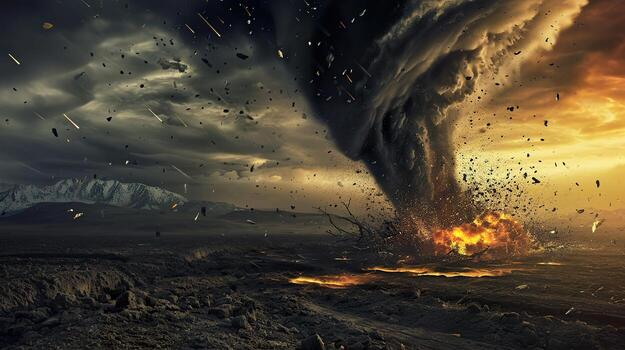

The Story
The concept of a natural disaster is a story of intersection, a meteorological and societal process that begins long before the ground shakes or the winds howl. Rather than an isolated, unpredictable attack, a disaster is a dynamic outcome shaped by the routine release of tectonic energy, the shifting patterns of weather, and the persistent influence of human geography. In its earliest context, the Earth’s extreme events—floods, fires, and tremors—were simply the planet's mechanisms for distributing heat and recycling nutrients, devoid of the label of "catastrophe." As the planet's climate and geological plates shifted, these natural forces simply altered the terrain, acting as catalysts for ecological change rather than agents of tragedy.tening touch of green. As the planet’s climate shifted, erosion began to break down these ancient stones, creating the foundational soils necessary for the first life forms to take root.
Over centuries of civilization, human populations expanded outward, colonizing the vulnerable edges of continents and the fertile, yet volatile, floodplains. These early settlements began to alter the landscape through engineering, exchanging resilient, water-absorbing wetlands for impermeable concrete and dense architecture. This societal shift allowed for the rise of complex urban centers and vast economic networks, which in turn concentrated populations squarely in the paths of predictable geological and meteorological events. As infrastructure diversified and expanded, it created brittle environments, turning routine natural hazards into localized crises—from submerged coastal neighborhoods to fire-prone suburban fringes.
Our modern disasters are the result of this long-term collision between natural forces and human vulnerability. On every continent, the severity of a catastrophic event is dictated not just by wind speed or seismic magnitude, but by the underlying architecture, resource management, and societal preparedness. Today, humans play the defining role in this ongoing story, drafting policies and building infrastructure that attempt to balance urban expansion with risk mitigation. While we understand much about the physics behind extreme weather and fault lines, the exact threshold of a disaster remains complex, constantly adapting to shifting climates and expanding populations. In essence, the story of natural disasters is one of human responsibility: a continuous cycle of planning, destruction, and adaptation that challenges us to learn how to live safely within a powerful, moving world.

Philosophical Questions
Does a natural disaster destroy our reality, or simply reveal our actual place in it?
We spend our lives building complex layers of civilization—economies, borders, and social hierarchies. We navigate this web every day, treating it as the fundamental, unchanging reality of human existence. But when a fault line shifts or a flood washes through a valley, that invisible architecture vanishes in a matter of hours. A rising tide doesn't recognize property lines, and an earthquake doesn't observe social status.
This introduces a compelling philosophical perspective on human nature and society. Sociologists often observe that in the immediate aftermath of a collapse, our artificial divisions dissolve. People are returned to a baseline biological reality, suddenly sharing resources and pulling strangers from the debris. This raises a quiet but profound question about the way we live: Is our normal, highly structured society the actual illusion? A natural disaster might not just be a destructive event, but a sudden clearing of the lens—a moment that strips away our constructed identities to show that, at our core, we are simply a cooperative species trying to survive on an unpredictable planet.
Does a storm possess intent, or is its sheer indifference the heavier reality to accept?
When a hurricane alters a coastline and uproots lives, human psychology naturally searches for a narrative. Historically, we have assigned meaning to these events, blaming cosmic karma or looking for reasons, because finding a purpose for suffering is often easier than accepting random chance.
The science of meteorology offers a quieter truth: a storm contains no malice and no target; it is simply the necessary transfer of heat across a spinning globe. This brings us to the philosophy of cosmic indifference. If the same atmospheric forces that bring life-giving rain are the ones that can wash a town away, it challenges the comforting idea that the universe is inherently designed for our safety. It asks us to accept that human love, grief, and survival play out on a natural stage that is fundamentally unaware of our presence.
Are we simply victims of a shifting planet, or the direct result of its volatility?
It is completely natural to view a geological cataclysm as an ending. However, evolutionary biology shows that without sudden, profound changes to the planet, human life would likely not exist. The asteroid impact that caused mass extinction 66 million years ago acted as an immense ecological reset, clearing the path for small mammals to survive, adapt, and eventually evolve into us.
This leads to an interesting evolutionary speculation. Destruction in nature is rarely an absolute end; it is often the primary engine for new creation. The historical "disasters" of Earth's past were simply turning points in an ongoing biological process. It raises a humbling question about the deep future: if shifting climates or geological events eventually displace human civilization, the planet will likely just fold our history into the soil, using it as the silent foundation for the next era of life.